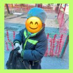
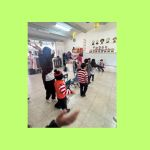

Actividades del Proyecto
A continuación se muestran algunas de las actividades que realizamos con los niños durante el proyecto:
- Recoleccion de ojitas secas: En esta actividad los niños estuvieron recolectando ojitas
- Juego de las sillas :En esta actividad estuvieron bailando alrededor de unas sillitas con canciones del medio ambiente
- Mundo limpio:Aqui los niños estubieron pegando basura en un mundito y despues lo limpiaron

